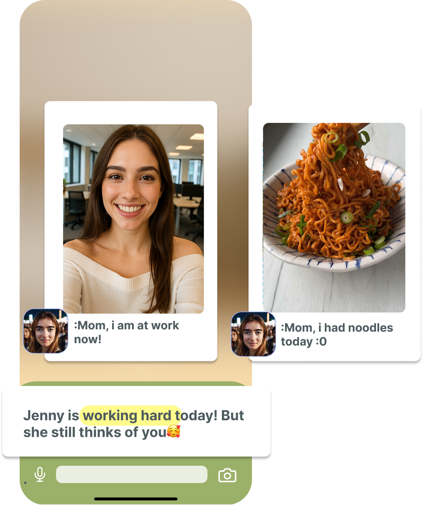

1/4
seniors are facing loneliness
Family App
Create a companion for your family, that checks-in 24 hours a day, no matter where.
LIMITED SPOTS! APPLY NOW!


Count Down

About
Hunny is an AI-powered companion that checks in on your loved ones through natural conversations — and turns those interactions into simple updates and alerts for you.
The stakes are real
These are the moments that change outcomes. Early signals help families respond sooner.

Daily Activities
Hunny shares photo updates and quick notes so family members can stay connected, even during a busy day.

Hunny Features
Hunny is built to keep everyone connected, supported, and updated with thoughtful tools for everyday family life.
Gentle reminders and updates throughout the day.
Personalied summaries and alerts to act on within hours.
Save photos and short notes your family can revisit.
Always-on support when loved ones need a companion.
Pain points → Solutions (Hunny)
Ten common family-care tensions — and how Hunny is designed to respond.
“I don’t know if they’re okay.”
Caregivers live in constant anxiety when they can’t check on loved ones. The real fear is silence, not emergencies.
Smart daily check-ins + instant alerts
Hunny gently checks in and notifies you only when something feels off.
“I don’t want to spy or be annoying.”
Existing tools are too invasive (cameras, tracking) or too manual (calls, texts).
Non-intrusive AI companion
Friendly conversations instead of surveillance — care without hovering.
“What if I miss something important?”
Early warning signs (missed meds, mood shifts, inactivity) are often missed until it’s too late.
Signals, not diagnoses
Hunny detects subtle changes and surfaces early signals before crises happen.
“Everything is scattered and messy.”
Families rely on group chats, spreadsheets, and random apps — nothing is unified.
One simple family dashboard
All updates, summaries, and alerts in one place.
“Group chats are chaotic.”
Care coordination across family members is disorganized and overwhelming.
Care-circle system
Shared visibility with structured updates — no more chaos.
“They always say they’re fine… but are they?”
Emotional and mental health is invisible — caregivers lack real insight.
Emotional context insights
Hunny understands tone, behavior, and engagement — not just words.
“Tracking everything is exhausting.”
Manual logging (moods, meds, behaviors) is time-consuming and unsustainable.
Automatic tracking through conversation
No forms, no spreadsheets — it just happens naturally.
“They won’t use complicated apps.”
Seniors and others forget, avoid, or reject traditional apps.
Zero-friction experience
Feels like chatting with someone familiar — no learning curve.
“I feel guilty all the time.”
Caregivers feel guilty for not checking enough — or checking too much.
Peace of mind, automatically
Hunny reduces guilt by always being there in the background.
“There’s no app built for families.”
Most tools are single-user or clinical — not designed for real family dynamics.
Family-first design
Built for shared care, shared visibility, and real relationships.
Community voices
Real worries and hopes from families — swipe, use the arrows, or pick a dot.
FAQ
Tap a question to expand the answer. Straight talk on what Hunny is, privacy, and how to get started.
Hunny is an AI-powered companion that checks in on your loved ones through natural conversations — and turns those interactions into simple updates and alerts for you.
Instead of constant monitoring, Hunny answers one question:
“Are they okay today?”
Hunny is designed for families who care about someone but can’t always be there:
Most tools are:
Hunny is:
No.
Hunny does not use:
It only learns from natural conversations, just like texting or chatting.
No — Hunny is designed to feel like a friendly companion, not a tool.
This is critical because caregivers consistently reject tools that feel invasive or controlling.
No.
Hunny:
Only meaningful ones, like:
Not constant notifications.
You’ll just see a calm update like:
👉 “Everything looks normal today.”
Yes.
Hunny is built for care circles, so:
(This is one of the biggest unmet needs caregivers complain about.)
Yes.
You can choose:
Because caregivers today face 3 constant problems:
Hunny reduces all three.
Because:
Families want signals, not guesswork.
Most people already try:
But they’re fragmented and exhausting.
Hunny replaces all of that with one clear system.
Hunny will be a subscription-based app (family plan).
💡 Early users on the waitlist will get:
We’re currently building and testing Hunny.
👉 Join the waitlist to get early access.
Hunny is designed to:
But it is not a replacement for human care or emergency services.
That’s exactly why Hunny exists.
It’s designed to:
Because many caregivers say:
👉 “My parent won’t use tech anyway.”
Because families aren’t asking for monitoring.
They’re asking for:
And that doesn’t exist yet.
Contact Us
Have questions or want updates about Hunny? Add your email below and we'll follow up. You can still reach us directly using the links under the form.
Email hunny.app.official@gmail.com
Instagram & Threads